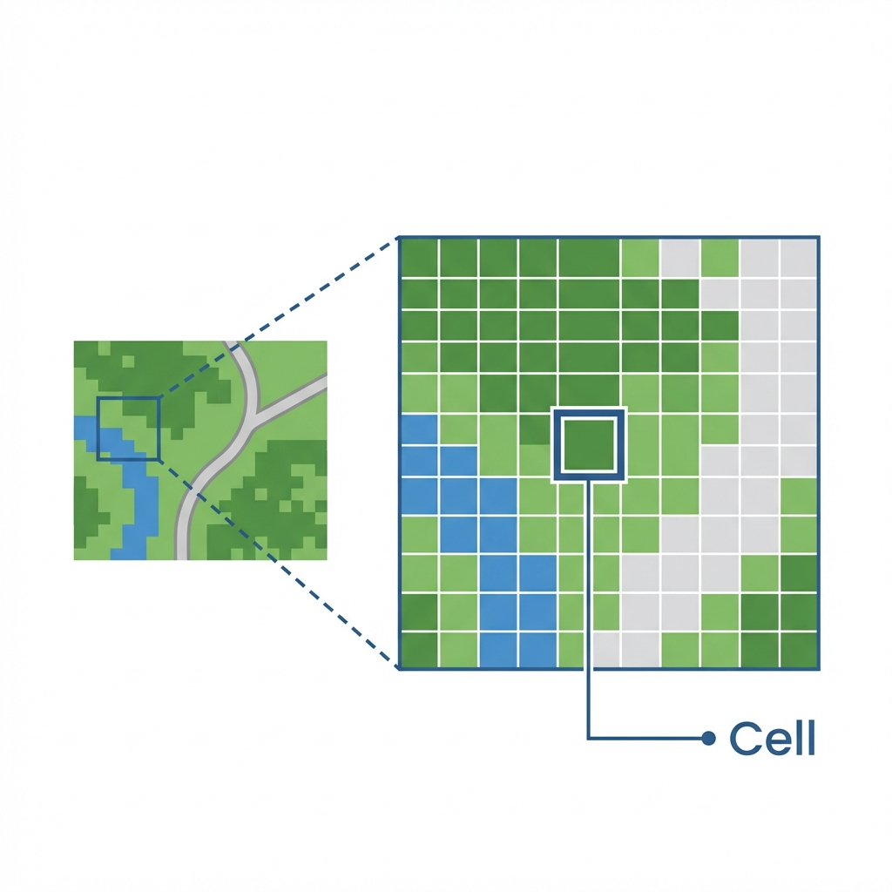
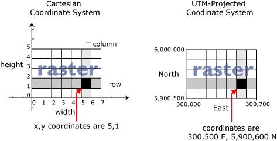

The Two Pillars of GIS
In the digital realm, geographic information is predominantly stored in one of two formats: Vector or Raster. Choosing the right one is the fundamental decision of every GIS project.

Figure 1.1: The fundamental dichotomy of spatial data.
Vector Model
Represents the world as discrete objects. Think of this as "connect the dots" or architectural drafting.
- Points: Exact X,Y coordinates (e.g., a specific tree).
- Lines: Connected sequences of points (e.g., a section of Interstate 10).
- Polygons: Closed areas (e.g., the boundary of Travis County).
Raster Model
Represents the world as a continuous grid of cells. Think of this as a digital photograph or a TV screen. In its simplest form, a raster is just a matrix of rows and columns.
Key Characteristics
Each cell (or pixel) holds a value representing one of three things:
- Continuous Data: Values that change gradually, like elevation (DEMs) or temperature.
- Thematic (Discrete) Data: Categorical values, like Land Use (1=Forest, 2=Water).
- Pictures: Scanned maps or aerial photos where value = color.
Cell Location & Coordinates
A raster is essentially a giant spreadsheet. The location of every cell is defined by its Row and Column coordinates. In a real GIS, we map these Cartesian (x,y) coordinates to real-world locations (Latitude/Longitude) so the image sits in the right place on Earth.
Why use Raster?
- ✅ Advanced Analysis: Essential for math-heavy modeling (e.g., surface runoff, suitability analysis).
- ✅ Continuous Surfaces: The only way to truly represent things that exist everywhere (like air pressure).
- ❌ Trade-offs: Rasters can become huge files (adding detail = 4x file size). They also suffer from "mixed pixels" where one cell must represent multiple features.
Data Capture: Digitizing
Before we had satellite downloads, we had to manually "trace" paper maps into the computer. This implies mounting a map to a digitizing tablet and clicking points along lines to create vector coordinates.
Figure: Manual Digitizing circa 1990s. This is still done today for historical maps!
Manual GIS: The Legacy of Dr. John Snow
GIS is not a new concept; it is just a new technology. Long before computers, geographers performed "Manual GIS" using transparent overlays and cognitive spatial analysis.

Figure 1.3: Dr. John Snow's Cholera Map of London's Soho (1854).
In 1854, a cholera outbreak struck London's Soho district. Dr. John Snow, a physician, didn't just treat patients; he mapped them.
By plotting the location of deaths (points) and water pumps (points) on a base map, he noticed a deadly cluster around the Broad Street Pump. He famously convinced officials to remove the handle of the pump, ending the outbreak.
Interactive Explorer: Choosing Your Model
Use the buttons below to toggle between a Vector representation (streets and parcels) and a Raster representation (satellite imagery) of Austin, Texas.
Interactive: The Data Model Decision Matrix
As a GIS Analyst, your first job is often choosing the right format. Click the scenarios below to see if they should be Vector or Raster.
Summary of Big Ideas
- Spatial data is information that has a specific location on Earth's surface.
- The Vector model uses discrete geometry (points, lines, polygons) to represent features.
- The Raster model uses a grid of equal-sized cells to represent continuous phenomena.
- The GIS Sandwich is the conceptual stacking of these layers to perform analysis.
Chapter 01 Checkpoint
Test your knowledge of spatial data models.
1. Which data model would be best for representing a network of utility pipelines?
2. If you increase the resolution of a raster dataset, what happens to the cell size?
3. Which model is best suited for representing continuous elevation across a mountain range?
4. Which geometric primitive would best represent a solitary oak tree on a city park map?
5. Dr. John Snow's 1854 analysis was groundbreaking because he: